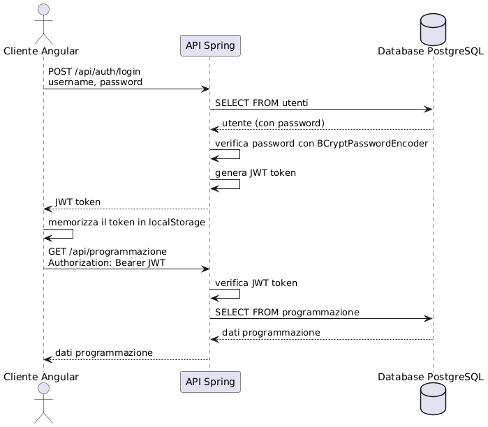
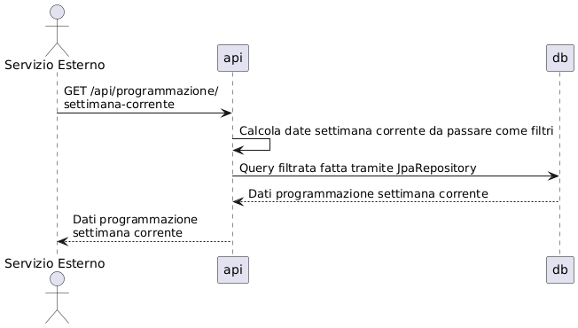

Architettura del Sistema
Backend
Il backend è stato strutturato seguendo le indicazioni standard del pattern MVC
Package principali
- Model: Rappresentano le entità del dominio, mappate direttamente sul DB tramite l'ORM di Hibernate
- Repository: Si interfacciano con il Database, estendono JpaRepository in modo da offrire operazioni standard di CRUD già implementate sulle entità
- Controller: Gestiscono le richieste HTTP e definiscono gli endpoint dell'API REST
- Service: Implementano la logica di business
- Config: Configurazioni di base per CSRF, CORS, Middleware per Logging e controllo JWT, Esclusione URL da autenticazione obbligatoria
Dipendenze
Definite nel pom.xml del backedn
- Spring Boot Web
- Spring Data JPA
- Spring Security
- JWT
- PostgreSQL
Frontend (Angular 19)
- Comunicazione con il backend tramite chiamate http all'API Rest
- Gestione dello stato dell'applicazione, principalmente sullo stato di autenticazione dell'utente
- Gestione route guard in base allo stato di autenticazione dell'utente
Package Principali
- Core: Contiene logica fondamentale, servizi e guard
-
- Servizi: Gestiscono la logica di business e la comunicazione con il backend
-
- Guard: Proteggono l'accesso alle funzionalità in base all'autenticazione
- Shared: Contiene componenti comuni a molteplici pagine/componenti. In questo caso viene usato per la Navbar
- Features: Le funzionalità sono organizzate in features. Ciascuna feature può contenere i componenti delle pagine (Film e Login in questo caso), e un ulteriore cartella con dentro componenti minori che possono essere utilizzati in altre pagine/componenti
Dipendenze
- Angular Core e Common
- Angular Material
- RxJS
- Angular Router
Flusso di Autenticazione
L'autenticazione è gestita in un approccio stateless tramite token JWT (JSON Web Token).
Processo di Login
- L'utente invia credenziali (username e password) al backend
- Il backend verifica le credenziali contro il database
- Se valide, genera un token JWT firmato con una chiave segreta
- Il token viene restituito al client
- Il client memorizza il token nel localStorage
- Per le richieste successive, il token viene inviato nell'header Authorization
Verifica del Token
- Per ogni richiesta autenticata, il client include il token JWT nell'header
- Il backend cattura e verifica l'autenticità del token con la classe JWTFilter usando la chiave segreta
- Se valido, estrae l'identità dell'utente e i ruoli
- La richiesta viene processata in base ai permessi dell'utente e/o endpoint chiamato
Diagramma di Sequenza di Autenticazione

Accesso alle API di Programmazione
Il sistema offre due endpoint per accedere ai dati di programmazione:
1. Endpoint per utenti autenticati (richiede JWT)
GET /api/programmazione
Questo endpoint è protetto tramite JWT e permette di visualizzare lo storico completo delle programmazioni, con possibilità di filtraggio per data.

2. Endpoint pubblico (non richiede autenticazione)
GET /api/programmazione/settimana-corrente
Questo endpoint è accessibile pubblicamente e restituisce solo le programmazioni della settimana corrente. È pensato per sistemi di visualizzazione esterni o per utenti non registrati.
